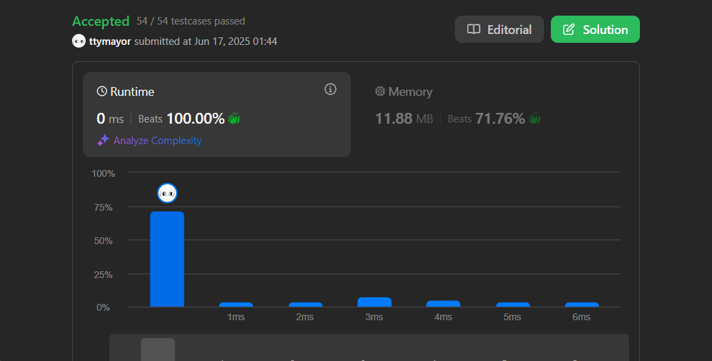
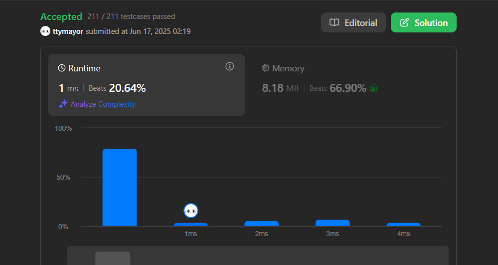
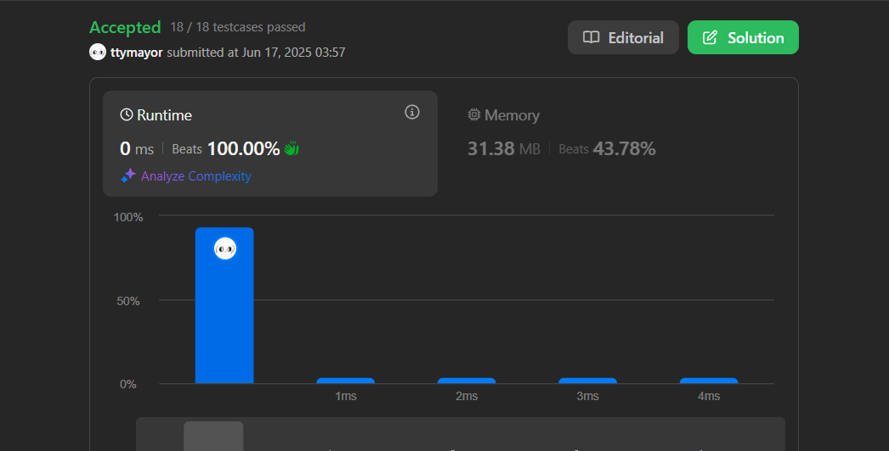
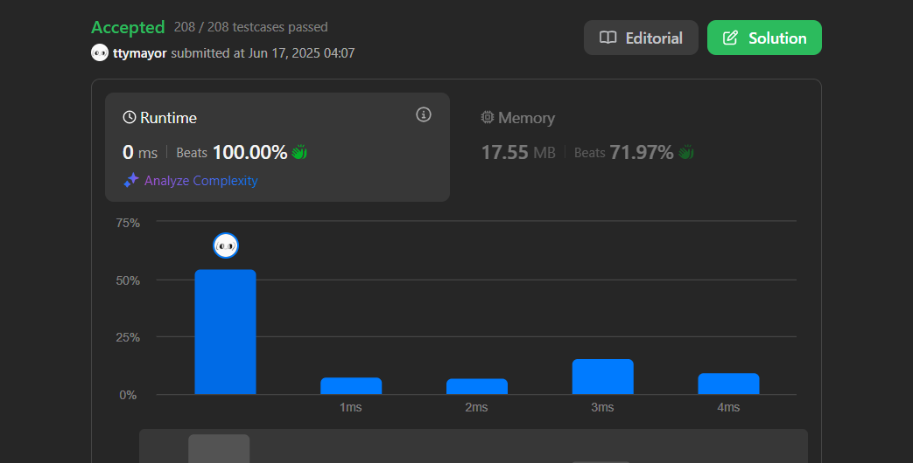
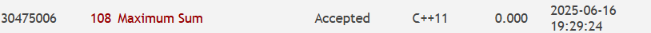
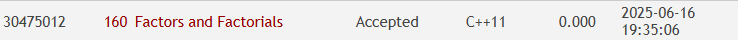
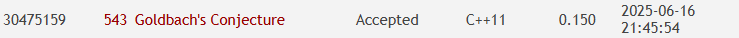
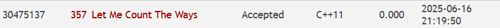

ℹ️ Note
圖片不見可以跟我說一下，但我應該也不會改，嘻嘻
# C++ 期末作業：CPE & Leetcode History
# LeetCode Daily Question
# 2016. Maximum Difference Between Increasing Elements
心得：沒什麼難度的 Daily (?)
tags: Array 陣列

-
暴力解，時間複雜度：O(n^2)
cppclass Solution { public: int maximumDifference(vector<int>& nums) { int n = nums.size(); int ans = -1; for (int i = 0; i < n - 1; i++) { for (int j = i + 1; j < n; j++) { if (nums[i] >= nums[j]) continue; ans = max(ans, nums[j] - nums[i]); } } return ans; } }; -
優化後：每次遍歷一次，都是在用先前的最小值，所以可以記錄最小值，就不須跑兩層迴圈。 時間複雜度：O(n)（線性）
cppclass Solution { public: int maximumDifference(vector<int>& nums) { int n = nums.size(); int ans = -1; int premin = nums[0]; for (int i = 1; i < n; i++) { if (nums[i] > premin) { ans = max(ans, nums[i] - premin); } else { premin = nums[i]; } } return ans; } };
# 1432. Max Difference You Can Get From Changing an Integer
心得：從測資注意到若高位數為 9 或 1 就要往後位數找非最大或最小。然後也沒什麼難度，再寫個函式處理要轉換的字元。
Tags: Math 數學 Greedy 貪婪

class Solution {
public:
int maxDiff(int num) {
string str_num = to_string(num);
int n = str_num.size();
string mx_num = str_num;
string mn_num = str_num;
// find max
for (int i = 0; i < n; i++) {
if (mx_num[i] != '9') {
transfer(mx_num, mx_num[i], '9');
break;
}
}
// find min
if (mn_num[0] == '1') {
for (int i = 1; i < n; i++) {
if (mn_num[i] != '0' && mn_num[i] != '1') {
transfer(mn_num, mn_num[i], '0');
break;
}
}
} else {
transfer(mn_num, mn_num[0], '1');
}
return stoi(mx_num) - stoi(mn_num);
}
void transfer(string &s, char before, char after) {
for (char& c : s) {
if (c == before) c = after;
}
}
};# LeetCode 自選題
# 222. Count Complete Tree Nodes
題目連結：https://leetcode.com/problems/count-complete-tree-nodes/description/
心得：單純是我想複習 Tree 跟 Linked List 的題目，就遞迴每個節點 total + 1，所以也沒什麼難度 (?
Tags: Tree 樹 Recursion 遞迴

class Solution {
public:
int countNodes(TreeNode* root) {
int ans = 0;
counter(root, ans);
return ans;
}
void counter(TreeNode* root, int& total) {
if (root == NULL) return;
total++;
counter(root->left, total);
counter(root->right, total);
}
};# 257. Binary Tree Paths
題目連結：https://leetcode.com/problems/binary-tree-paths/description/
心得：就一樣遞迴硬寫，就可以寫出來，也很簡單 (?
Tags: String 字串 Backtracking 回溯 Tree 樹 Depth-First Search 深度優先搜尋演算法 Binary Tree 二元樹

class Solution {
public:
vector<string> binaryTreePaths(TreeNode* root) {
vector<string> ans;
findPaths(root, "", ans);
return ans;
}
void findPaths(TreeNode* root, string path, vector<string>& ans) {
path += to_string(root->val);
if (root->left != NULL || root->right != NULL) path.append("->");
if (root->left != NULL) findPaths(root->left, path, ans);
if (root->right != NULL) findPaths(root->right, path, ans);
if (root->left == NULL && root->right == NULL) ans.push_back(path);
}
};# CPE
ℹ️ Note
OJ(Online Judge) 測資應該比 ZJ(ZeroJudge) 測資嚴格，所以只放 OJ 的 AC 結果
# UVa 00108 - Maximum Sum (歷屆 2 星題)
題目連結：
- ZJ: https://zerojudge.tw/ShowProblem?problemid=d206
- OJ: https://onlinejudge.org/index.php?option=com_onlinejudge&Itemid=8&page=show_problem&problem=44
心得：這題一開始看就是 DP 或前綴和，但沒什麼想法，看了參考解答，結果是 DP + 前綴和呢 :)，這題簡化就是最大子串列和，所以就是先處理每一行改成前綴和（算法比較好，迴圈可以少寫），再去用最大子串列和的解法解。
Tags: Prefix Sum 前綴和 DP 動態規劃

#include <bits/stdc++.h>
using namespace std;
long long n, a[105][105], ans, sum;
int main() {
while (cin >> n) {
// 輸入圖
for (int i = 1; i <= n; i++) {
for (int j = 1; j <= n; j++) {
cin >> a[i][j];
// 直接做前綴和
a[i][j] += a[i][j-1];
}
}
// 處理二維問題
ans = 0;
for (int i = 0; i < n; i++) {
for (int j = i + 1; j <= n; j++) {
sum = 0;
for (int k = 1; k <= n; k++) {
sum += a[k][j] - a[k][i];
ans = max(sum, ans);
if (sum < 0) sum = 0;
}
}
}
cout << ans << '\n';
}
}# UVa 00160 - Factors and Factorials (歷屆 2 星題)
題目連結：
- ZJ: https://zerojudge.tw/ShowProblem?problemid=d131
- OJ: https://onlinejudge.org/index.php?option=com_onlinejudge&Itemid=8&page=show_problem&problem=96
心得：就很正常的質數題目，主要是建表跟類似貪婪的算法，但我寫了很多次質數題目了，建表就…很方便就對了，貪婪也就基礎的換錢概念。
Tags: Prime 質數 建表 (Greedy 貪婪)

#include <bits/stdc++.h>
#define ouo ios_base::sync_with_stdio(false), cin.tie(0)
#define ll long long
#define db double
#define pii pair<int, int>
#define pdd pair<double, double>
using namespace std;
vector<int> prime;
vector<bool> isPrime(100);
void init() {
for (int i = 0; i <= 100; i++) isPrime[i] = true;
isPrime[0] = isPrime[1] = false;
for (int i = 2; i <= 100; i++) {
if (isPrime[i]) {
prime.push_back(i);
for (int j = i * i; j <= 100; j += i) {
isPrime[j] = false;
}
}
}
}
int main() {
init();
int n;
while (cin >> n) {
if (n == 0) break;
map<int, int> primeList;
for (int i = n; i >= 2; i--) {
if (isPrime[i]) primeList[i]++;
else {
int tmp = i, primeIdx = 0;
while (tmp != 1) {
while (tmp % prime[primeIdx] == 0) {
primeList[prime[primeIdx]]++;
tmp /= prime[primeIdx];
}
primeIdx++;
}
}
}
int count = 1;
cout << setw(3) << n;
cout << "! =";
for (auto item : primeList) {
if (count > 15) {
count = 0;
cout << '\n' << setw(3) << " " << setw(3) << " ";
}
cout << setw(3) << item.second;
count++;
}
cout << '\n';
}
}# UVa 00543 - Goldbach’s Conjecture (2025/05/20 Q.4)
題目連結：
- ZJ: https://zerojudge.tw/ShowProblem?problemid=c050
- OJ: https://onlinejudge.org/index.php?option=com_onlinejudge&Itemid=8&page=show_problem&problem=484
心得：好。對。這題。又是。建表。寫了 n 次 +1 了，所以也沒什麼難度。
Tags: Prime 質數 建表

#include <bits/stdc++.h>
#define ouo ios_base::sync_with_stdio(false), cin.tie(0)
#define ll long long
#define db double
#define pii pair<int, int>
#define pdd pair<double, double>
using namespace std;
int main() {
vector<int> prime;
vector<bool> isPrime(1000005, true);
isPrime[0] = false;
isPrime[1] = false;
for (int i = 2; i < 1000005; i++) {
if (isPrime[i]) {
prime.push_back(i);
for (int j = i + i; j < 1000005; j += i) {
isPrime[j] = false;
}
}
}
int n;
while (cin >> n) {
if (n == 0) break;
bool hasPair = false;
for (int i = 1; prime[i] <= n / 2; i++) {
if (isPrime[n - prime[i]]) {
cout << n << " = " << prime[i] << " + " << n - prime[i] << '\n';
hasPair = true;
break;
}
}
if (!hasPair) {
cout << "Goldbach's conjecture is wrong.\n";
}
}
}# UVa 00357 - Let Me Count The Ways (2025/05/20 Q.5)
題目連結：
- ZJ: https://zerojudge.tw/ShowProblem?problemid=d133
- OJ: https://onlinejudge.org/index.php?option=onlinejudge&page=show_problem&problem=293
心得：這題算有趣…嗎，反正一開始想到的是貪婪，畢竟換錢嘛，但它求的方法數，所以看了別人的解題思路後，才知道可以用 DP 做狀態轉移。
Tags: DP 動態規劃

#include <bits/stdc++.h>
#define ouo ios_base::sync_with_stdio(false), cin.tie(0)
#define ll long long
#define db double
#define pii pair<int, int>
#define pdd pair<double, double>
using namespace std;
ll dp[30001];
int main() {
int coins[] = {1, 5, 10, 25, 50};
dp[0] = 1;
for (int i = 0; i < 5; i++) {
for (int j = coins[i]; j < 30001; j++) {
dp[j] += dp[j - coins[i]];
}
}
int n;
while (cin >> n) {
if (dp[n] == 1) {
cout << "There is only 1 way to produce " << n << " cents change.\n";
} else {
cout << "There are " << dp[n] << " ways to produce " << n << " cents change.\n";
}
}
}
留言板（尚在測試階段）
登入
還沒有帳號？ 註冊
註冊
已有帳號？ 登入
歡迎，！ 登出